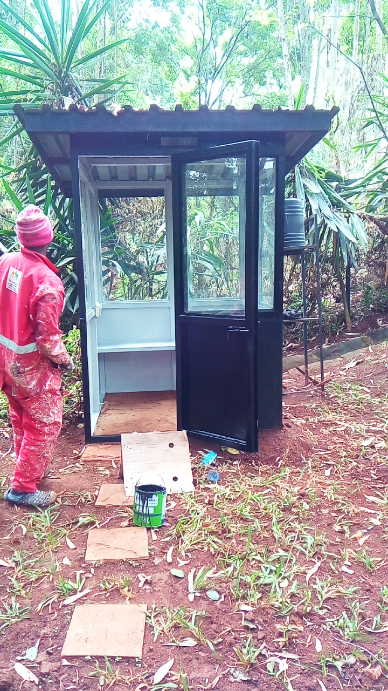

1. Mucheru World of Golf — Dam 3 Excavation, Pumice Stone Delivery, Earthmoving & Grading
Dam 3 deepening, pumice stone delivery for Greens 1–3, Tee Box 16 levelling, stripped soil transport across Greens 13–17 & timber relocation
- Dam 3 Excavation Progress (8h 30m): Heavy excavation progressed intensively at Dam 3, with the Sunward SWE210 hydraulic excavator operating for 8 hours 30 minutes (@ KES 8,500/hr = KES 72,250.00) deepening the central reservoir basin and profiling embankment slopes.
- Front Loader Operations (7h 20m): The front loader operated continuously for 7 hours 20 minutes (@ KES 6,500/hr = KES 47,645.00), clearing sub-base areas, preparing putting green ground profiles, grading Tee Box No. 16, and levelling dumped soil heaps.
- Damping Tipper Haulage (79 Trips): Tipper trucks completed 79 total trips (@ KES 1,000/trip = KES 79,000.00), hauling excavated earth and stripped overburden from Dam 3 to designated course damping zones.
- Total Daily Machinery Expenditure: Combined heavy equipment and earthmoving expenditure for the day amounted to KES 198,895.00.
- Moving Stripped Soil (Greens 13, 14, 15, 16 & 17): Coordinated earthmoving operations transported stripped topsoil from Greens 13 through 17 to designated fairway fill areas.
- Timber Posts Relocation (Overseen by Kinoti): Completed 2 tractor trailer trips loading and relocating felled tree posts and timber poles across the golf course for perimeter fence shifting.
| Equipment / Resource | Operating Time / Volume | Unit Rate (KES) | Total Cost (KES) | Operational Scope & Target Locations |
|---|---|---|---|---|
| Hydraulic Excavator | 8 Hours 30 Minutes | @ KES 8,500 / hr | KES 72,250.00 | Dam 3 basin floor deepening, embankment profiling & tipper loading |
| Front Loader | 7 Hours 20 Minutes | @ KES 6,500 / hr | KES 47,645.00 | Tee Box 16 grading, dumped soil levelling, green clearance & profiling |
| Damping Tipper Lorries | 79 Total Trips | @ KES 1,000 / trip | KES 79,000.00 | Excavated topsoil and overburden haulage from Dam 3 |
| Tractor Logistics (Kinoti) | 2 Trips | Internal / Farm Tractor | — | Loading and relocating timber posts across the golf site |
| Total Machinery & Operations Cost: | KES 198,895.00 | |||
- Pumice Stone Delivery: High-capacity supply trucks delivered bulk consignments of high-grade volcanic pumice stone gravel to the golf site.
- Putting Green Allocation: Pumice stone offloaded and neatly staged adjacent to Green No. 1, Green No. 2, and Green No. 3 to serve as the critical permeable sub-surface drainage layer beneath the red topsoil rootzone.
🎯 Material Delivery Milestone: Greens 1, 2 & 3 Drainage Pumice Staged
Pumice aggregate has been successfully delivered and staged for Greens 1, 2, and 3, ensuring optimal moisture regulation and putting green drainage performance.
📷 Mucheru World of Golf Visual Documentation

Dam 3 Multi-Machine Operations
Panoramic view of Dam 3 excavation with excavator, tipper lorry, and backhoe working concurrently.

Dam 3 Basin Deepening (8h 30m)
Sunward hydraulic excavator deepening the basin bowl floor and profiling reservoir embankment slopes.

Tee Box 16 & Soil Mound Levelling
Backhoe loader pushing and levelling dumped earth heaps to shape Tee Box 16 contours.

Ground Grading & Surface Profiling
XGMA backhoe loader clearing and levelling ground profiles across the golf course (7h 20m run).

Stripped Topsoil Movement (Greens 13–17)
Cleared fairway corridor with stripped topsoil moved across Greens 13, 14, 15, 16, and 17.

Pumice Delivery for Greens 1, 2 & 3
Heavy-duty supply truck loaded with volcanic pumice aggregate arriving on site.

Pumice Aggregate Offloading
Crews offloading pumice gravel aggregate and staging heaps adjacent to putting green foundations.

Pumice Stockpile for Drainage
Staged conical pile of pumice gravel aggregate ready for putting green drainage construction.

Stone Foundation Compaction & Red Soil
Ground crews compacting hardcore stones with sledgehammers and building up red soil perimeter edges.

Red Soil Staging for Green Foundation
Field teams shovelling and staging red topsoil mounds alongside the hardcore stone foundation.

Hardcore Rock Packing
Hand-packing hardcore rocks across the green bed with staged red soil heaps surrounding the site.

Green Sub-Base Construction
Lining the green perimeter with membrane and packing dense stone foundation rock.

Timber Posts Relocation (2 Trips)
Tractor trailer loaded with tree poles and timber branches hauled under Kinoti's supervision.

Relocated Timber Posts Stockpile
Neat stockpile of timber logs and fence posts relocated and staged for fence shifting.
2. Chaka Farms — Dairy Yield & Distribution, Livestock Care, Canine Training & Drone Practice
Daily milking & kid milk distribution, cattle acaricide spraying, flower watering, compound cleanliness, canine commands & drone practice
- Morning & Evening Milking Yield: Daily milking concluded under Kamandau's supervision, recording a total daily yield of 4.0 Litres of fresh milk (Morning: 2.0 Litres | Evening: 2.0 Litres).
- Goat Kids Milk Allocation (3.0 Litres): Young goat kids were bottle/pan-fed 1.5 Litres of fresh milk during the morning session and 1.5 Litres in the evening.
- Maasai Allocation (1.0 Litre): 1.0 Litre of fresh milk was provided for Maasai's daily allocation.
- Morning Cattle Spraying: Routine cattle spraying successfully conducted in the morning crush using a knapsack sprayer with acaricide for comprehensive tick and external parasite control.
| Production & Distribution Session | Morning (Litres) | Evening (Litres) | Total Volume (Litres) |
|---|---|---|---|
| Fresh Milk Produced | 2.0 Litres | 2.0 Litres | 4.0 Litres |
| Goat Kids Feeding Allocation | 1.5 Litres | 1.5 Litres | 3.0 Litres |
| Maasai Allocation | — | — | 1.0 Litre |
- Car Park Flower & Hedge Watering (Overseen by Willy): Thorough hose irrigation carried out across the vibrant flower beds and golden hedges bordering the car parking area.
- General Compound Cleanliness (Overseen by Margaret & Monica): Systematic sweeping, weeding, and compound cleaning executed across farm pathways, yards, and perimeter areas.
- Kennel Manners & Threshold Discipline: Impeccable boundary patience demonstrated by all dogs during morning release and feeding.
- Farm Off-Leash Walking & Exercise: Dogs completed structured off-leash walking and conditioning exercise around the farm acreage with solid recall response.
- Obedience Command Drills: Focused training on paw, sit, down commands, and prolonged patience drills with outstanding obedience.
- Home Compound Drone Flight Testing: Comprehensive drone flight practice and equipment testing conducted over the home compound to verify camera stability, aerial maneuvering, and survey readiness.
📷 Chaka Farms Visual Documentation

Morning Cattle Parasite Spraying
Kamandau spraying dairy cattle with acaricide in the pen for tick and parasite control.

Car Park Flower & Hedge Watering
Willy watering golden border hedges and flower beds surrounding the parking area.
3. Kabete Residence — Fireplace Demolition, Sentry House & Car Park Paintworks
Fireplace excavation & demolition, main gate sentry paint completion, car park shade paint completion & fence post painting
- Fireplace Clearance & Demolition: Full-scale demolition of old stone structures and excavation of soil overburden in progress around the circular fireplace pit.
- Sentry House near Fireplace: Construction and preparation works for the new sentry post near the fireplace area progressing steadily.
- Main Gate Sentry House Paintworks Complete: Painting of the exterior stone fascia, parapet overhang, and windows/doors on the main gate sentry house fully completed with crisp white finish.
- Car Parking Canopy Paintworks Complete: Complete weather-resistant coating applied to the car park shade canopy steel framing, trusses, and support poles.
- Perimeter Fence Posts Paintwork: Anti-rust black gloss paint application in progress along the garden boundary steel fence posts.
🎉 Paintwork Milestones Completed: Main Gate Sentry & Car Park Canopy (100%)
Both the main gate sentry house exterior paintworks and the car park shade canopy structure painting have reached 100% completion today.
- Ajabu the Golden Retriever: Evening feeding, grooming, and veranda relaxation attended to under Njoki's care.
- Resident Cats (Aiko & Reo): Evening meal served together in clean feeding bowls on the tiled patio.
📷 Kabete Residence Visual Documentation

Fireplace Clearance & Demolition
Teams clearing soil and demolishing old masonry around the outdoor fireplace pit.

Main Gate Sentry House Painted (100%)
Crisp white finish completed along the fascia and parapet of the stone guardhouse.

Sentry House Parapet Complete
View of completed paintwork on the stone sentry house roofline at the main gate.

Sentry Cabin near Fireplace
Painter applying dark protective coat to the guard post cabin near the fireplace area.

Car Park Canopy Painted (100%)
Fresh uniform paintwork completed across the car park shade canopy steel structures.

Car Park Canopy Painting
Painter applying protective coating to the underside steel trusses of the parking canopy.

Perimeter Fence Posts Painting
Anti-rust black paint application ongoing along the garden steel fence posts.

Ajabu Having Evening Dinner
Resident Golden Retriever Ajabu enjoying his evening meal on the tiled veranda.

Resident Cats Dinner Time
Resident cats eating their evening dinner side by side in clean stainless steel bowls.